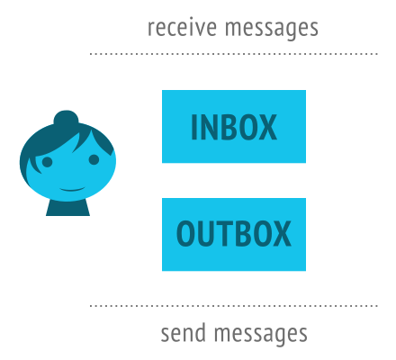
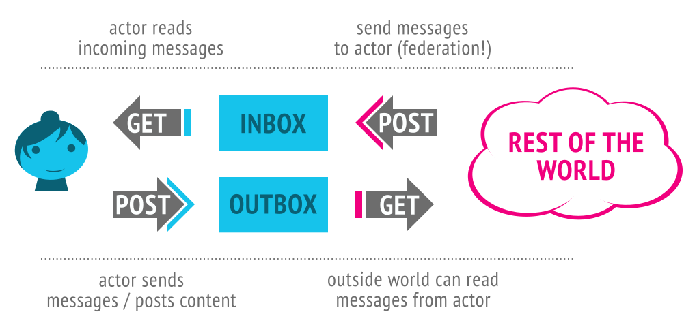
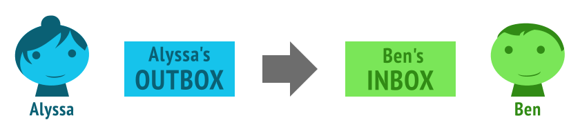

ActivityPub プロトコルは、[[!ActivityStreams]] 2.0 データフォーマットに基いた非中央集権的なソーシャルネットワーキングプロトコルです。 内容の作成、更新、削除を行うためにクライアントから呼び出すサーバーの API と、通知や内容を伝達するために連合したサーバーが呼び出すサーバーの API を提供します。
ActivityPub は次の2つのレイヤーを提供します：
ActivityPub を実装するにあたっては、これらのどちらか一方のみ、または両方を実装することが可能です。 しかしながら、片方が実装できていれば、もう片方を実装するのに多くの手間はかからず、両者によるメリットを得ることができます（ウェブサイトを非中央集権的なソーシャルウェブの一部にしたり、幅広いソーシャルウェブサイトで動作するクライアントやそのライブラリを使えるようになる）。
ActivityPub では、ユーザーのことを、サーバー上のユーザーを介して「actor」で表現されます。異なるサーバー上のユーザーのアカウントは、異なる actor に対応します。 それぞれの actor は次の要素を持ちます：
inbox: 外界からメッセージを受け取る部分outbox: 他人へとメッセージを送る部分
これらは、エンドポイントだったり、実際には ActivityPub の actor の ActivityStreams での説明に列挙されているただの URL であったりします（ActivityStreams について後にもう少し説明あり）。
これは、我々の友達である Alyssa P. Hacker のレコードの一例です：
{"@context": "https://www.w3.org/ns/activitystreams",
"type": "Person",
"id": "https://social.example/alyssa/",
"name": "Alyssa P. Hacker",
"preferredUsername": "alyssa",
"summary": "Lisp のオタク / MIT にいます",
"inbox": "https://social.example/alyssa/inbox/",
"outbox": "https://social.example/alyssa/outbox/",
"followers": "https://social.example/alyssa/followers/",
"following": "https://social.example/alyssa/following/",
"liked": "https://social.example/alyssa/liked/"}
ActivityPub は [[!ActivityStreams]] の語彙を用います。 これはとても良いことで、なぜなら ActivityStreams はソーシャルネットワークで流れるすべての activity や内容を表現するのに必要な、共通したあらゆる表現を含んでいるからです。 おそらく、ActivityStreams はあなたが必要とする語彙すべてをすでに含んでいると考えられますが、もしそうでなかったとしても、[[!JSON-LD]] を介して ActivityStreams を拡張できます。 JSON-LD のことを知っているなら、JSON-LD によって提供されるすてきな linked data の手法によるメリットを得られます。 もし知らなかったとしても、落ち込む必要はありません。JSON-LD ドキュメントと ActivityStreams は普通のシンプルな JSON として解釈できます （拡張を追加しようとするときに、JSON-LD が非常に助けとなってくれるのです）。
さて、Alyssa は友達に話し掛けたいと思っていて、彼女の友達もまた彼女に話し掛けたいと思っています！ 幸運なことに、これらの "inbox" と "outbox" というものが私たちの助けとなります。両者は GET と POST に対して異なる働きをします。どのように動くのか見てみましょう：

要約すると：
もちろん、最後のもの（誰かの outbox に対して GET すること）だけが人々の投稿を見るための方法だったら、あまり効率的な連合のプロトコルにはならないでしょう！ 実際、連合そのものは、サーバー同士が actor から actor へのメッセージをほかのサーバー上の inbox に送ることで起きています。
例を見てみましょう！ Alyssa が彼女の友達である Ben Bitdiddle の近況を知りたいと思ったとします。彼女は彼に最近本を貸したので、彼がそれを返すことを確かめておきたいです。 これは、彼女が綴ったメッセージを、ActivityStreams のオブジェクトとして表現したものです：
{"@context": "https://www.w3.org/ns/activitystreams",
"type": "Note",
"to": ["https://chatty.example/ben/"],
"attributedTo": "https://social.example/alyssa/",
"content": "そうだ、私が貸したあの本は読み終わった？"}
これは Ben に向けた note です。 彼女は、これを自身の outbox に POST します。
これは activity ではないオブジェクトなので、サーバーはこれが新たに作られたオブジェクトであると認識し、Create activity に包むという特別な扱い方をします （ActivityPub において送信される activity は、一般的に、actor がもたらす何らかのオブジェクトによる何らかの activity、というパターンに従います。 この場合での activity は、Person によって投稿された Note オブジェクトの Create になります）。
{"@context": "https://www.w3.org/ns/activitystreams",
"type": "Create",
"id": "https://social.example/alyssa/posts/a29a6843-9feb-4c74-a7f7-081b9c9201d3",
"to": ["https://chatty.example/ben/"],
"actor": "https://social.example/alyssa/",
"object": {"type": "Note",
"id": "https://social.example/alyssa/posts/49e2d03d-b53a-4c4c-a95c-94a6abf45a19",
"attributedTo": "https://social.example/alyssa/",
"to": ["https://chatty.example/ben/"],
"content": "そうだ、私が貸したあの本は読み終わった？"}}
Alyssa のサーバーが Ben の ActivityStreams の actor オブジェクトを探し、彼の inbox エンドポイントを見つけ、彼女のオブジェクトを彼の inbox に POST します。
厳密には、これらは2つの別々のステップです…… 一つ目はクライアント-サーバー間の伝達であり、二つ目はサーバー間での伝達（連合）です。 しかし、この例では両者を使っているので、このことを outbox から inbox への投稿の流れとして抽象的に捉えることができます。

すばらしい！ 少し間を置いて、Alyssa は彼女への新しいメッセージを確認します。 彼女の携帯は GET で自身の inbox にポーリングし、友達が投稿した大量の猫動画や、姉妹が投稿した甥の写真などの中から、次のものを見つけました：
{"@context": "https://www.w3.org/ns/activitystreams",
"type": "Create",
"id": "https://chatty.example/ben/p/51086",
"to": ["https://social.example/alyssa/"],
"actor": "https://chatty.example/ben/",
"object": {"type": "Note",
"id": "https://chatty.example/ben/p/51085",
"attributedTo": "https://chatty.example/ben/",
"to": ["https://social.example/alyssa/"],
"inReplyTo": "https://social.example/alyssa/posts/49e2d03d-b53a-4c4c-a95c-94a6abf45a19",
"content": "<p>あー、うん、ごめん、明日返すよ。</p>
<p>レジスタマシンの章を見直していたんだ、
以前に書いてからだいぶ経ってしまったからね。</p>"}}
Alyssa は安心したので、Ben の投稿に like をつけます：
{"@context": "https://www.w3.org/ns/activitystreams",
"type": "Like",
"id": "https://social.example/alyssa/posts/5312e10e-5110-42e5-a09b-934882b3ecec",
"to": ["https://chatty.example/ben/"],
"actor": "https://social.example/alyssa/",
"object": "https://chatty.example/ben/p/51086"}
彼女はこのメッセージを自身の outbox に POST します （これは activity なため、彼女のサーバーはこれを Create オブジェクトの中に包む必要がないことを知っています）。
嬉しさを感じたので、彼女はフォロワーに対して public なメッセージを投稿することを決めました。 やがて、次のメッセージが彼女のフォロワーの collection のすべてのメンバーに送信されました。また、特別な Public group が指定されていたので、誰からでも一般に読むことが可能になっています。
{"@context": "https://www.w3.org/ns/activitystreams",
"type": "Create",
"id": "https://social.example/alyssa/posts/9282e9cc-14d0-42b3-a758-d6aeca6c876b",
"to": ["https://social.example/alyssa/followers/",
"https://www.w3.org/ns/activitystreams#Public"],
"actor": "https://social.example/alyssa/",
"object": {"type": "Note",
"id": "https://social.example/alyssa/posts/d18c55d4-8a63-4181-9745-4e6cf7938fa1",
"attributedTo": "https://social.example/alyssa/",
"to": ["https://social.example/alyssa/followers/",
"https://www.w3.org/ns/activitystreams#Public"],
"content": "友達に本を貸すのは良い。返してもらうことはより良いですね！(^_^)"}}
この仕様書では、密接に関係・相互作用する 2 つのプロトコルを定義します：
これらのプロトコルのうちどちらか一方を実装したら、もう片方をサポートするのにわずかな努力しか必要がないように ActivityPub の仕様は設計されています。 しかしながら、依然としてサーバー側では片方のみしか実装しないこともあります。 このことは次の3つの準拠クラスを与えます：
連合プロトコルの実装に仕様の一部が当てはまる場合にのみ、このように分類されて呼ばれます。 また、必要条件が指定されているときはいつでも、（クライアント-サーバー間のプロトコルについては）それらがクライアントまたはサーバーに当てはまるかどうか、 またはサーバー間のプロトコルの内で送受信を行うサーバーについて言及するかどうかで分類されて呼ばれます。
Objects are the core concept around which both [[!ActivityStreams]] and ActivityPub are built. Objects are often wrapped in Activities and are contained in streams of Collections, which are themselves subclasses of Objects. See the [[!Activity-Vocabulary]] document, particularly the Core Classes; ActivityPub follows the mapping of this vocabulary very closely.
ActivityPub defines some terms in addition to those provided by
ActivityStreams.
These terms are provided in the ActivityPub
JSON-LD context
at
https://www.w3.org/ns/activitystreams.
Implementers SHOULD include the ActivityPub context in their
object definitions.
Implementers MAY include additional context as appropriate.
ActivityPub shares the same URI / IRI conventions as in ActivityStreams.
Servers SHOULD validate the content they receive to avoid content spoofing attacks. (A server should do something at least as robust as checking that the object appears as received at its origin, but mechanisms such as checking signatures would be better if available). No particular mechanism for verification is authoritatively specified by this document, but please see Security Considerations for some suggestions and good practices.
{
"@context": "https://www.w3.org/ns/activitystreams",
"type": "Like",
"actor": "https://example.net/~mallory",
"to": ["https://hatchat.example/sarah/",
"https://example.com/peeps/john/"],
"object": {
"@context": {"@language": "en"},
"id": "https://example.org/~alice/note/23",
"type": "Note",
"attributedTo": "https://example.org/~alice",
"content": "I'm a goat"
}
}
it should dereference the id both to ensure that it exists
and is a valid object, and that it is not misrepresenting the object.
(In this example, Mallory could be spoofing an object allegedly posted
by Alice).
All Objects in [[!ActivityStreams]] should have unique global identifiers. ActivityPub extends this requirement; all objects distributed by the ActivityPub protocol MUST have unique global identifiers, unless they are intentionally transient (short lived activities that are not intended to be able to be looked up, such as some kinds of chat messages or game notifications). These identifiers must fall into one of the following groups:
null object,
which implies an anonymous object (a part of its parent context)
Identifiers MUST be provided for activities posted in server to
server communication, unless the activity is intentionally transient.
However, for client to server communication, a server receiving an
object posted to the outbox with no specified id SHOULD
allocate an object ID in the actor's namespace and attach it to the
posted object.
All objects have the following properties:
id MAY be omitted).
The HTTP GET method may be dereferenced against an object's
id property to retrieve the activity.
Servers MAY use HTTP content negotiation as defined in [[!RFC7231]] to
select the type of data to return in response to a request,
but MUST present the ActivityStreams object representation
in response to
application/ld+json; profile="https://www.w3.org/ns/activitystreams",
and SHOULD also present the ActivityStreams representation in
response to application/activity+json as well.
The client MUST specify an Accept header with the
application/ld+json; profile="https://www.w3.org/ns/activitystreams"
media type in order to retrieve the activity.
Servers MAY implement other behavior for requests which do not comply with the above requirement. (For example, servers may implement additional legacy protocols, or may use the same URI for both HTML and ActivityStreams representations of a resource).
Servers MAY require authorization as specified in , and may additionally implement their own authorization rules. Servers SHOULD fail requests which do not pass their authorization checks with the appropriate HTTP error code, or the 403 Forbidden error code where the existence of the object is considered private. An origin server which does not wish to disclose the existence of a private target MAY instead respond with a status code of 404 Not Found.
In addition to all the properties defined by the
[[!Activity-Vocabulary]], ActivityPub extends the Object by
supplying the source property.
The source property is intended to convey some
sort of source from which the content markup
was derived, as a form of provenance, or to support future
editing by clients.
In general, clients do the conversion from source
to content, not the other way around.
The value of source is itself an object
which uses its own content and mediaType
fields to supply source information.
{
"@context": ["https://www.w3.org/ns/activitystreams",
{"@language": "en"}],
"type": "Note",
"id": "http://postparty.example/p/2415",
"content": "<p>I <em>really</em> like strawberries!</p>",
"source": {
"content": "I *really* like strawberries!",
"mediaType": "text/markdown"}
}
In general, it's best to let a user edit their original post
in the same source format they originally composed it in.
But not all clients can reliably provide a nice interface for
all source types, and since clients are expected to do the
conversion from source to content,
some clients may work with a media type that another client
does not know how to work with.
While a client could feasibly provide the content
markup to be edited and ignore the source, this means that the
user will lose the more desirable form of the original
source in any future revisions.
A client doing so should thus provide a minimally obtrusive warning
cautioning that the original source format is not understood and is
thus being ignored.
For example, Alyssa P. Hacker likes to post to her ActivityPub
powered blog via an Emacs client she has written, leveraging
Org mode.
Later she switches to editing on her phone's client, which
has no idea what text/x-org is or how to render
it to HTML, so it provides a text box to edit the original
content instead.
A helpful warning displays above the edit area saying,
"This was originally written in another markup language we don't
know how to handle. If you edit, you'll lose your original
source!"
Alyssa decides the small typo fix isn't worth losing her nice
org-mode markup and decides to make the update when she gets
home.
ActivityPub actors are generally one of the
ActivityStreams Actor Types,
but they don't have to be. For example, a
Profile object
might be used as an actor, or a type from an ActivityStreams extension.
Actors are retrieved like any other
Object in ActivityPub.
Like other ActivityStreams objects, actors have an id,
which is a URI.
When entered directly into a user interface (for example on a login
form), it is desirable to support simplified naming.
For this purpose, ID normalization SHOULD be performed as follows:
example.org/alice/, clients MAY attempt to provide
a default scheme, preferably https.
Once the actor's URI has been identified, it should be dereferenced.
Actor objects MUST have, in addition to the properties mandated by , the following properties:
OrderedCollection
comprised of all the messages received by the actor; see
.
OrderedCollection
comprised of all the messages produced by the actor; see
.
Implementations SHOULD, in addition, provide the following properties:
Implementations MAY provide the following properties:
{
"@context": ["https://www.w3.org/ns/activitystreams",
{"@language": "ja"}],
"type": "Person",
"id": "https://kenzoishii.example.com/",
"following": "https://kenzoishii.example.com/following.json",
"followers": "https://kenzoishii.example.com/followers.json",
"liked": "https://kenzoishii.example.com/liked.json",
"inbox": "https://kenzoishii.example.com/inbox.json",
"outbox": "https://kenzoishii.example.com/feed.json",
"preferredUsername": "kenzoishii",
"name": "石井健蔵",
"summary": "この方はただの例です",
"icon": [
"https://kenzoishii.example.com/image/165987aklre4"
]
}
Implementations MAY, in addition, provide the following properties:
The endpoints mapping MAY include the following
properties:
x-www-form-urlencoded id parameter
with the value being the id of the requested
ActivityStreams object.
sharedInbox endpoints SHOULD also be publicly
readable OrderedCollection objects containing
objects addressed to the Public
special collection.
Reading from the sharedInbox endpoint MUST NOT present
objects which are not addressed to the Public
endpoint.
As the upstream vocabulary for ActivityPub, any applicable [[!ActivityStreams]] property may be used on ActivityPub Actors. Some ActivityStreams properties are particularly worth highlighting to demonstrate how they are used in ActivityPub implementations.
id.
Properties containing natural language values,
such as name, preferredUsername, or
summary, make use of
natural language support defined in ActivityStreams.
[[!ActivityStreams]] defines the collection concept; ActivityPub defines several collections with special behavior. Note that ActivityPub makes use of ActivityStreams paging to traverse large sets of objects.
Note that some of these collections are specified to be of type
OrderedCollection
specifically, while others are permitted to be either a
Collection
or an
OrderedCollection.
An
OrderedCollection
MUST be presented consistently in reverse chronological order.
What property is used to determine the reverse chronological order is intentionally left as an implementation detail. For example, many SQL-style databases use an incrementing integer as an identifier, which can be reasonably used for handling insertion order in most cases. In other databases, an insertion time timestamp may be preferred. What is used isn't important, but the ordering of elements must remain intact, with newer items first. A property which changes regularly, such a "last updated" timestamp, should not be used.
The outbox is discovered through the outbox
property of an actor's profile.
The outbox MUST be an
OrderedCollection.
The outbox stream contains activities the user has published, subject to the ability of the requestor to retrieve the activity (that is, the contents of the outbox are filtered by the permissions of the person reading it). If a user submits a request without Authorization the server should respond with all of the Public posts. This could potentially be all relevant objects published by the user, though the number of available items is left to the discretion of those implementing and deploying the server.
The outbox accepts HTTP POST requests, with behaviour described in Client to Server Interactions.
The inbox is discovered through the inbox
property of an actor's profile.
The inbox MUST be an
OrderedCollection.
The inbox stream contains all activities received by the actor. The server SHOULD filter content according to the requester's permission. In general, the owner of an inbox is likely to be able to access all of their inbox contents. Depending on access control, some other content may be public, whereas other content may require authentication for non-owner users, if they can access the inbox at all.
The server MUST perform de-duplication of activities returned by
the inbox. Duplication can occur if an activity is addressed both
to an actor's followers, and a specific
actor who also follows the recipient actor, and the server has failed
to de-duplicate the recipients list.
Such deduplication MUST be performed by comparing the
id of the activities and dropping any activities
already seen.
The inboxes of actors on federated servers accepts HTTP POST requests, with behaviour described in Delivery. Non-federated servers SHOULD return a 405 Method Not Allowed upon receipt of a POST request.
Every actor SHOULD have a followers
collection.
This is a list of everyone who has sent a
Follow
activity for the actor, added as a
side effect.
This is where one would find a list of all the actors that are
following the actor.
The followers collection MUST be either an
OrderedCollection
or a
Collection
and MAY be filtered on privileges of an authenticated user
or as appropriate when no authentication is given.
The follow activity generally is a request to see the objects an actor creates. This makes the Followers collection an appropriate default target for delivery of notifications.
Every actor SHOULD have a following collection.
This is a list of everybody that the actor has followed, added as a
side effect.
The following collection MUST be either an
OrderedCollection
or a
Collection
and MAY be filtered on privileges of an authenticated user
or as appropriate when no authentication is given.
Every actor MAY have a liked collection.
This is a list of every object from all of the actor's Like
activities, added as a side effect.
The liked collection MUST be either an
OrderedCollection
or a
Collection
and MAY be filtered on privileges of an authenticated user
or as appropriate when no authentication is given.
In addition to [[!ActivityStreams]] collections and objects,
Activities may additionally be addressed to the special "public"
collection, with the identifier
https://www.w3.org/ns/activitystreams#Public.
For example:
{
"@context": "https://www.w3.org/ns/activitystreams",
"id": "https://www.w3.org/ns/activitystreams#Public",
"type": "Collection"
}
Activities addressed to this special URI shall be accessible to all
users, without authentication.
Implementations MUST NOT deliver to the "public" special collection;
it is not capable of receiving actual activities.
However, actors MAY have a
sharedInbox
endpoint which is available for efficient shared delivery of public
posts (as well as posts to followers-only); see
.
Compacting an ActivityStreams object using the ActivityStreams
JSON-LD context might result in
https://www.w3.org/ns/activitystreams#Public
being represented as simply Public or as:Public
which are valid representations of the Public collection.
Implementations which treat ActivityStreams objects as simply
JSON rather than converting an incoming activity over to a
local context using JSON-LD tooling should be aware of this
and should be prepared to accept all three representations.
Every object MAY have a likes collection.
This is a list of all Like activities with this object
as the object property, added as a
side effect.
The likes collection MUST be either an
OrderedCollection
or a
Collection
and MAY be filtered on privileges of an authenticated user
or as appropriate when no authentication is given.
Care should be taken to not confuse the the
likes
collection with the similarly named but different
liked collection.
In sum:
Like activities performed
by the actor,
added to the collection as a
side effect of delivery to the outbox.
Like activities referencing
this object,
added to the collection as a
side effect of delivery to the inbox.
Activities as defined by [[!ActivityStreams]] are the core mechanism for creating, modifying and sharing content within the social graph.
Client to server interaction takes place through clients posting
Activities to an actor's outbox.
To do this, clients MUST discover the URL of the actor's outbox from
their profile and then MUST make an HTTP
POST request to this URL with the Content-Type of
application/ld+json; profile="https://www.w3.org/ns/activitystreams".
Servers MAY interpret a Content-Type or Accept header of
application/activity+json as equivalent
to application/ld+json; profile="https://www.w3.org/ns/activitystreams"
for client-to-server interactions.
The request MUST be authenticated with the credentials of the user to
whom the outbox belongs.
The body of the POST request MUST contain a single
Activity (which MAY contain embedded objects), or a single non-Activity
object which
will be wrapped in a Create activity
by the server.
POST /outbox/ HTTP/1.1
Host: dustycloud.org
Authorization: Bearer XXXXXXXXXXX
Content-Type: application/ld+json; profile="https://www.w3.org/ns/activitystreams"
{
"@context": ["https://www.w3.org/ns/activitystreams",
{"@language": "en"}],
"type": "Like",
"actor": "https://dustycloud.org/chris/",
"name": "Chris liked 'Minimal ActivityPub update client'",
"object": "https://rhiaro.co.uk/2016/05/minimal-activitypub",
"to": ["https://rhiaro.co.uk/#amy",
"https://dustycloud.org/followers",
"https://rhiaro.co.uk/followers/"],
"cc": "https://e14n.com/evan"
}
If an Activity is submitted with a value in the id
property, servers MUST ignore this and generate a new id
for the Activity.
Servers MUST return a 201 Created HTTP code, and unless
the activity is transient, MUST include the new id in the
Location header.
HTTP/1.1 201 Created
Location: https://dustycloud.org/likes/345
The server MUST remove the bto and/or bcc
properties, if they exist, from the ActivityStreams object before
delivery, but MUST utilize the addressing originally stored
on the bto / bcc properties for determining
recipients in delivery.
The server MUST then add this new Activity to the outbox collection. Depending on the type of Activity, servers may then be required to carry out further side effects. (However, there is no guarantee that time the Activity may appear in the outbox. The Activity might appear after a delay or disappear at any period). These are described per individual Activity below.
Attempts to submit objects to servers not implementing client to server
support SHOULD result in a 405 Method Not Allowed response.
HTTP caching mechanisms [[!RFC7234]] SHOULD be respected when appropriate, both in clients receiving responses from servers as well as servers sending responses to clients.
Clients are responsible for addressing new Activities
appropriately.
To some extent, this is dependent upon the particular client
implementation, but clients must be aware that the server will only
forward new Activities to addressees in the to,
bto, cc, bcc, and
audience fields.
The Followers Collection and/or the Public Collection are good choices for the default addressing of new Activities.
Clients SHOULD look at any objects attached to the new Activity via the
object, target, inReplyTo and/or
tag fields, retrieve their actor or
attributedTo properties, and MAY also retrieve their addressing
properties, and add these to the to or cc
fields of the new Activity being created.
Clients MAY recurse through attached objects, but if doing so, SHOULD
set a limit for this recursion.
(Note that this does not suggest that the client should "unpack"
collections of actors being addressed as individual recipients).
Clients MAY give the user the chance to amend this addressing in the UI.
For example, when Chris likes the following article by Amy:
{
"@context": ["https://www.w3.org/ns/activitystreams",
{"@language": "en-GB"}],
"id": "https://rhiaro.co.uk/2016/05/minimal-activitypub",
"type": "Article",
"name": "Minimal ActivityPub update client",
"content": "Today I finished morph, a client for posting ActivityStreams2...",
"attributedTo": "https://rhiaro.co.uk/#amy",
"to": "https://rhiaro.co.uk/followers/",
"cc": "https://e14n.com/evan"
}
the like is generated by the client as:
{
"@context": ["https://www.w3.org/ns/activitystreams",
{"@language": "en"}],
"type": "Like",
"actor": "https://dustycloud.org/chris/",
"summary": "Chris liked 'Minimal ActivityPub update client'",
"object": "https://rhiaro.co.uk/2016/05/minimal-activitypub",
"to": ["https://rhiaro.co.uk/#amy",
"https://dustycloud.org/followers",
"https://rhiaro.co.uk/followers/"],
"cc": "https://e14n.com/evan"
}
The receiving outbox can then perform delivery to not only the followers of Chris (the liker), but also to Amy, and Amy's followers and Evan, both of whom received the original article.
Clients submitting the following activities to an outbox
MUST provide the object property in the activity:
Create, Update, Delete,
Follow, Add, Remove,
Like, Block, Undo.
Additionally, clients submitting the following activities to an outbox
MUST also provide the target property:
Add, Remove.
The Create activity is used when posting a new object.
This has the side effect that the object embedded within the Activity
(in the object property) is created.
When a Create activity is posted, the actor
of the activity SHOULD be copied onto the object's
attributedTo field.
A mismatch between addressing of the Create activity and its
object is likely to lead to confusion.
As such, a server SHOULD copy any recipients of the Create activity
to its object upon initial distribution, and likewise
with copying recipients from the object to the wrapping
Create activity.
Note that it is acceptable for the object's addressing
to be changed later without changing the Create's
addressing (for example via an Update activity).
For client to server posting, it is possible to submit an object for
creation without a surrounding activity.
The server MUST accept a valid [[!ActivityStreams]] object that
isn't a subtype of Activity in the POST request to the
outbox.
The server then MUST attach this object as the object
of a Create Activity.
For non-transient objects, the server MUST attach an
id to both the wrapping Create and its
wrapped Object.
The Location value returned by the server should be the URL of
the new Create activity (rather than the object).
Any to, bto, cc, bcc,
and audience properties specified on the object MUST be
copied over to the new Create activity by the server.
{
"@context": "https://www.w3.org/ns/activitystreams",
"type": "Note",
"content": "This is a note",
"published": "2015-02-10T15:04:55Z",
"to": ["https://example.org/~john/"],
"cc": ["https://example.com/~erik/followers",
"https://www.w3.org/ns/activitystreams#Public"]
}
The above example could be converted to this:
{
"@context": "https://www.w3.org/ns/activitystreams",
"type": "Create",
"id": "https://example.net/~mallory/87374",
"actor": "https://example.net/~mallory",
"object": {
"id": "https://example.com/~mallory/note/72",
"type": "Note",
"attributedTo": "https://example.net/~mallory",
"content": "This is a note",
"published": "2015-02-10T15:04:55Z",
"to": ["https://example.org/~john/"],
"cc": ["https://example.com/~erik/followers",
"https://www.w3.org/ns/activitystreams#Public"]
},
"published": "2015-02-10T15:04:55Z",
"to": ["https://example.org/~john/"],
"cc": ["https://example.com/~erik/followers",
"https://www.w3.org/ns/activitystreams#Public"]
}
The Update activity is used when updating an already
existing object.
The side effect of this is that the object MUST be
modified to reflect the new structure as defined in the update
activity, assuming the actor has permission to update this
object.
For client to server interactions, updates are partial;
rather than updating the document all at once, any key value
pair supplied is used to replace the existing value with
the new value.
This only applies to the top-level fields of the updated
object.
A special exception is for when the value is the json
null type; this means that this field should be
removed from the server's representation of the object.
Note that this behavior is for client to server interaction where the client is posting to the server only. Server to server interaction and updates from the server to the client should contain the entire new representation of the object, after the partial update application has been applied. See the description of the Update activity for server to server interactions for more details.
The Delete activity is used to delete an already
existing object.
The side effect of this is that the server MAY replace the
object with a Tombstone of the object
that will be displayed in activities which reference the deleted
object.
If the deleted object is requested the server SHOULD respond with
either the HTTP 410 Gone status code if a Tombstone
object is presented as the response body, otherwise respond with a
HTTP 404 Not Found.
A deleted object:
{
"@context": "https://www.w3.org/ns/activitystreams",
"id": "https://example.com/~alice/note/72",
"type": "Tombstone",
"published": "2015-02-10T15:04:55Z",
"updated": "2015-02-10T15:04:55Z",
"deleted": "2015-02-10T15:04:55Z"
}
The Follow activity is used to subscribe to the
activities of another actor.
The side effect of receiving this in an outbox
is that the server SHOULD add the object to the
actor's following Collection
when and only if an Accept activity is subsequently
received with this Follow activity as its object.
Upon receipt of an Add activity into the
outbox, the server SHOULD
add the object to the collection specified in the
target property, unless:
target is not owned by the receiving
server, and thus they are not authorized to update it.
object is not allowed to be added to the
target collection for some other reason, at the
receiving server's discretion.
Upon receipt of a Remove activity into the
outbox, the server SHOULD
remove the object from the collection specified in the
target property, unless:
target is not owned by the receiving server, and
thus they are not authorized to update it.
object is not allowed to be removed from the
target collection for some other reason, at the
receiving server's discretion.
The Like activity indicates the actor likes
the object.
The side effect of receiving this in an outbox
is that the server SHOULD add the object to the
actor's liked Collection.
The Block activity is used to indicate that the posting
actor does not want another actor (defined in the object
property) to be able to interact with objects posted by the actor
posting the Block activity.
The server SHOULD prevent the blocked user from interacting with any object
posted by the actor.
Servers SHOULD NOT deliver Block Activities to their object.
The Undo activity is used to undo a previous activity.
See the Activity Vocabulary documentation on
Inverse Activities and "Undo".
For example, Undo may be used to undo a previous
Like, Follow, or Block.
The undo activity and the activity being undone MUST both have the
same actor.
Side effects should be undone, to the extent possible.
For example, if undoing a Like, any counter that had
been incremented previously should be decremented appropriately.
There are some exceptions where there is an existing and explicit
"inverse activity" which should be used instead.
Create based activities should instead use
Delete, and Add activities should use
Remove.
Federated servers MUST perform delivery on all Activities posted to the outbox according to outbox delivery.
Servers MAY support uploading document types to be referenced in activites, such as images, video or other binary data, but the precise mechanism is out of scope for this version of ActivityPub. The Social Web Community Group is refining the protocol in the ActivityPub Media Upload report.
Servers communicate with other servers and propagate information across
the social graph by posting activities to actors'
inbox endpoints.
An Activity sent over the network SHOULD have an id,
unless it is intended to be transient (in which case it MAY omit the
id).
POST requests (eg. to the inbox) MUST be made with a Content-Type of
application/ld+json; profile="https://www.w3.org/ns/activitystreams"
and GET requests (see also )
with an Accept header of
application/ld+json; profile="https://www.w3.org/ns/activitystreams".
Servers SHOULD interpret a Content-Type or Accept
header of application/activity+json as equivalent
to application/ld+json; profile="https://www.w3.org/ns/activitystreams"
for server-to-server interactions.
In order to propagate updates throughout the social graph, Activities are sent to the appropriate recipients. First, these recipients are determined through following the appropriate links between objects until you reach an actor, and then the Activity is inserted into the actor's inbox (delivery). This allows recipient servers to:
Delivery is usually triggered by, for example:
Servers performing delivery to the inbox or
sharedInbox properties of actors on other servers MUST
provide the object property in the activity:
Create, Update, Delete,
Follow, Add, Remove,
Like, Block, Undo.
Additionally, servers performing server to server delivery of the
following activities MUST also provide the target
property: Add, Remove.
HTTP caching mechanisms [[!RFC7234]] SHOULD be respected when appropriate, both when receiving responses from other servers as well as sending responses to other servers.
The following is required by federated servers communicating with other federated servers only.
An activity is delivered to its targets (which are
actors) by first looking up the targets'
inboxes and then posting the activity to those inboxes.
Targets for delivery are determined by checking the
ActivityStreams audience targeting;
namely, the to, bto, cc,
bcc, and audience fields of the activity.
The inbox is determined by first
retrieving the target actor's JSON-LD representation
and then looking up the inbox property.
If a recipient is a Collection or OrderedCollection,
then the server MUST dereference the collection (with the user's
credentials) and discover inboxes for each item in the collection.
Servers MUST limit the number of layers of indirections through
collections which will be performed, which MAY be one.
Servers MUST de-duplicate the final recipient list. Servers MUST also
exclude actors from the list which are the same as the actor
of the Activity being notified about. That is, actors shouldn't have their
own activities delivered to themselves.
What to do when there are no recipients specified is not defined, however it's recommended that if no recipients are specified the object remains completely private and access controls restrict the access to object. If the object is just sent to the "public" collection the object is not delivered to any actors but is publicly viewable in the actor's outbox.
An HTTP POST request (with authorization of the submitting user) is
then made to the inbox, with the Activity as
the body of the request.
This Activity is added by the receiver as an item in the
inbox OrderedCollection.
Attempts to deliver to an inbox on a non-federated server SHOULD
result in a 405 Method Not Allowed response.
For federated servers performing delivery to a third party server, delivery SHOULD be performed asynchronously, and SHOULD additionally retry delivery to recipients if it fails due to network error.
Note: Activities being distributed between actors on the same origin may use any internal mechanism, and are not required to use HTTP.
While it is not required reading to understand this specification,
it is worth noting that ActivityPub's targeting and delivery
mechanism overlaps with the
Linked Data Notifications
specification, and the two specifications may interoperably
combined.
In particular, the inbox property is the same between
ActivityPub and Linked Data Notifications, and the targeting
and delivery systems described in this document are supported
by Linked Data Notifications.
In addition to JSON-LD compacted ActivityStreams documents, Linked
Data Notifications also supports a number of RDF serializations
which are not required for ActivityPub implementations.
However, ActivityPub implementations which wish to be more broadly
compatible with Linked Data Notifications implementations may wish to
support other RDF representations.
When objects are received in the outbox (for servers which support both Client to Server interactions and Server to Server Interactions), the server MUST target and deliver to:
to, bto, cc,
bcc or audience fields if their values
are individuals or Collections owned by the actor.
These fields will have been populated appropriately by the client which posted the Activity to the outbox.
The following section is to mitigate the "ghost replies" problem which occasionally causes problems on federated networks. This problem is best demonstrated with an example.
Alyssa makes a post about her having successfully presented a paper at a conference and sends it to her followers collection, which includes her friend Ben. Ben replies to Alyssa's message congratulating her and includes her followers collection on the recipients. However, Ben has no access to see the members of Alyssa's followers collection, so his server does not forward his messages to their inbox. Without the following mechanism, if Alyssa were then to reply to Ben, her followers would see Alyssa replying to Ben without having ever seen Ben interacting. This would be very confusing!
When Activities are received in the inbox, the
server needs to forward these to recipients that the origin was unable
to deliver them to. To do this, the server MUST target and
deliver
to the values of to, cc, and/or audience
if and only if all of the following are true:
to, cc, and/or
audience contain a Collection owned by the server.
inReplyTo, object,
target and/or tag are objects owned by
the server.
The server SHOULD recurse through these values to look for linked objects
owned by the server, and SHOULD set a maximum limit for recursion (ie. the
point at which the thread is so deep the recipients followers may not mind
if they are no longer getting updates that don't directly involve the
recipient).
The server MUST only target the values of to,
cc, and/or audience
on the original object being forwarded, and not pick up any new
addressees whilst recursing through the linked objects
(in case these addressees were purposefully amended by or via the client).
The server MAY filter its delivery targets according to implementation-specific rules (for example, spam filtering).
Receiving a Create activity in an inbox has
surprisingly few side effects; the activity should appear in the
actor's inbox and it is likely that the server will want
to locally store a representation of this activity and its accompanying
object.
However, this mostly happens in general with processing activities
delivered to an inbox anyway.
For server to server interactions, an Update activity
means that the receiving server SHOULD update its copy of the
object of the same id to the copy
supplied in the Update activity.
Unlike the
client to server handling of the Update activity,
this is not a partial update but a complete replacement of the object.
The receiving server MUST take care to be sure that the
Update is authorized to modify its object.
At minimum, this may be done by ensuring that the Update
and its object are of same origin.
The side effect of receiving this is that (assuming the
object is owned by the sending actor / server) the
server receiving the delete activity SHOULD remove its representation
of the object with the same id, and MAY
replace that representation with a Tombstone object.
(Note that after an activity has been transmitted from an origin server to a remote server, there is nothing in the ActivityPub protocol that can enforce remote deletion of an object's representation).
The side effect of receiving this in an inbox is
that the server SHOULD generate either an Accept or
Reject activity with the Follow as the
object and deliver it to the actor of the
Follow.
The Accept or Reject MAY be generated
automatically, or MAY be the result of user input (possibly after
some delay in which the user reviews).
Servers MAY choose to not explicitly send a Reject
in response to a Follow, though implementors ought to
be aware that the server sending the request could be left in an
intermediate state.
For example, a server might not send a Reject to protect
a user's privacy.
In the case of receiving an Accept referencing this
Follow as the object, the server SHOULD add the
actor to the object actor's
Followers Collection.
In the case of a Reject, the server MUST NOT add the
actor to the object actor's
Followers Collection.
Sometimes a successful Follow subscription may
occur but at some future point delivery to the follower fails
for an extended period of time.
Implementations should be aware that there is no guarantee
that actors on the network will remain reachable and should
implement accordingly.
For instance, if attempting to deliver to an actor for perhaps
six months while the follower remains unreachable, it is
reasonable that the delivering server remove the subscriber
from the followers list.
Timeframes and behavior for dealing with unreachable actors are
left to the discretion of the delivering server.
The side effect of receiving this in an inbox is
determined by the type of the object received,
and it is possible to accept types not described in this document
(for example, an Offer).
If the object of an Accept received to an
inbox is a Follow activity
previously sent by the receiver, the server SHOULD add the
actor to the receiver's
Following Collection.
The side effect of receiving this in an inbox is
determined by the type of the object received,
and it is possible to reject types not described in this document
(for example, an Offer).
If the object of a Reject received to an
inbox is a Follow activity
previously sent by the receiver, this means the recipient did not
approve the Follow request. The server MUST NOT add the
actor to the receiver's
Following Collection.
Upon receipt of an Add activity into the
inbox, the server SHOULD
add the object to the collection specified in the
target property, unless:
target is not owned by the receiving server, and
thus they can't update it.
object is not allowed to be added to the
target collection for some other reason, at the
receiver's discretion.
Upon receipt of a Remove activity into the
inbox, the server SHOULD
remove the object from the collection specified in the
target property, unless:
target is not owned by the receiving server, and
thus they can't update it.
object is not allowed to be removed to the
target collection for some other reason, at the
receiver's discretion.
The side effect of receiving this in an inbox is
that the server SHOULD increment the object's count of likes by
adding the received activity to the
likes collection
if this collection is present.
Upon receipt of an Announce activity in an
inbox, a server SHOULD increment the object's count
of shares by adding the received activity to the
shares collection
if this collection is present.
Announce activity is effectively what is known as
"sharing", "reposting", or "boosting" in other social networks.
The Undo activity is used to undo the side effects
of previous activities.
See the ActivityStreams documentation on
Inverse Activities and "Undo".
The scope and restrictions of the Undo activity
are the same as for
the Undo activity in the context of client to server
interactions,
but applied to a federated context.
Building an international base of users is important in a federated
network.
ActivityStreams provides tooling for internationalization of content,
which should be used whenever possible.
However, it can be difficult for implementations to determine which
@language property
to provide for user-submitted content.
The
W3C Internationalization group
provides some
guidance on language detection.
Servers should not trust client submitted content, and federated servers also should not trust content received from a server other than the content's origin without some form of verification.
Servers should be careful to verify that new content is really posted by the actor that claims to be posting it, and that the actor has permission to update the resources it claims to. See also and .
It is often convenient while developing to test against a process running on localhost. However, permitting requests to localhost in a production client or server instance can be dangerous. Making requests to URIs on localhost which do not require authorization may unintentionally access or modify resources assumed to be protected to be usable by localhost-only.
If your ActivityPub server or client does permit making requests to localhost URIs for development purposes, consider making it a configuration option which defaults to off.
There are many types of URIs aside from just http and
https.
Some libraries which handle fetching requests at various URI schemes
may try to be smart and reference schemes which may be undesirable,
such as file.
Client and server authors should carefully check how their libraries
handle requests, and potentially whitelist only certain safe URI
types, such as http and https.
Servers should set a limit on how deep to recurse while resolving objects, or otherwise specially handle ActivityStreams objects with recursive references. Failure to properly do so may result in denial-of-service security vulnerabilities.
Spam is a problem in any network, perhaps especially so in federated networks. While no specific mechanism for combating spam is provided in ActivityPub, it is recommended that servers filter incoming content both by local untrusted users and any remote users through some sort of spam filter.
Servers should implement protections against denial-of-service attacks from other, federated servers. This can be done using, for example, some kind of ratelimiting mechanism. Servers should be especially careful to implement this protection around activities that involve side effects. Servers SHOULD also take care not to overload servers with submissions, for example by using an exponential backoff strategy.
Servers should ratelimit API client submissions. This serves two purposes:
In order to prevent a client from being overloaded by oversized Collections, servers should take care to limit the size of Collection pages they return to clients. Clients should still be prepared to limit the size of responses they are willing to handle in case they connect to malicious or compromised servers, for example by timing out and generating an error.
Any activity field being rendered for browsers (or other rich text enabled applications) should take care to sanitize fields containing markup to prevent cross site scripting attacks.
bto and bcc already
must be removed for delivery,
but servers are free to decide how to represent the object
in their own storage systems.
However, since bto and bcc are only intended
to be known/seen by the original author of the object/activity,
servers should omit these properties during display as well.
This specification comes from years of hard work and experience by a number of communities exploring the space of federation on the web. In particular, much of this specification is informed by OStatus and the Pump API, as pioneered by StatusNet (now GNU Social) and Pump.io. Both of those initiatives were the product of many developers' hard work, but more than anyone, Evan Prodromou has been a constant leader in this space, and it is unlikely that ActivityPub would exist in something resembling its current state without his hard work.
Erin Shepherd built the initial version of this specification, borrowed from the ideas in the Pump API document, mostly as a complete rewrite of text, but sharing most of the primary ideas while switching from ActivityStreams 1 to ActivityStreams 2.
Jessica Tallon and Christopher Lemmer Webber took over as editors when the standard moved to the W3C Social Working Group and did the majority of transition from Erin Shepherd's document to its current state as ActivityPub. Much of the document was rewritten and reorganized under the long feedback process of the Social Working Group.
ActivityPub has been shaped by the careful input of many members in the W3C Social Working Group. ActivityPub especially owes a great debt to Amy Guy, who has done more than anyone to map the ideas across the different Social Working Group documents through her work on [[Social-Web-Protocols]]. Amy also laid out the foundations for a significant refactoring of the ActivityPub spec while sprinting for four days with Christopher Allan Webber. These revisions lead to cleaner separation between the client to server and server components, along with clarity about ActivityPub's relationship to [[!LDN]], among many other improvements. Special thanks also goes to Benjamin Goering for putting together the implementation report template. We also thank mray for producing the spectacular tutorial illustrations (which are licensed under the same license as the rest of this document).
Many people also helped ActivityPub along through careful review. In particular, thanks to: Aaron Parecki, AJ Jordan, Benjamin Goering, Caleb Langeslag, Elsa Balderrama, elf Pavlik, Eugen Rochko, Erik Wilde, Jason Robinson, Manu Sporny, Michael Vogel, Mike Macgirvin, nightpool, Puck Meerburg, Sandro Hawke, Sarven Capadisli, Tantek Çelik, and Yuri Volkov.
This document is dedicated to all citizens of planet Earth. You deserve freedom of communication; we hope we have contributed in some part, however small, towards that goal and right.
Social Web Working Group
ActivityPub は Social Web Working Group によって作られた、いくつかの関連する仕様のうちの1つです。別の手法や補完的なプロトコルに興味のある実装者は [[Micropub]] と概要に関する書類 [[Social-Web-Protocols]] を参照してください。